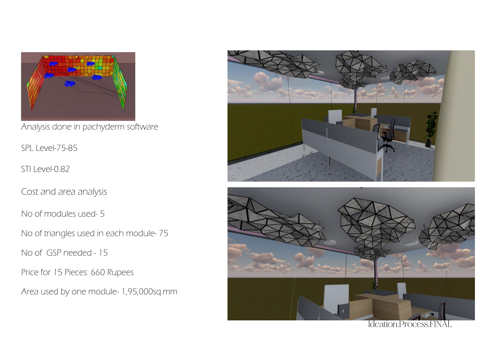
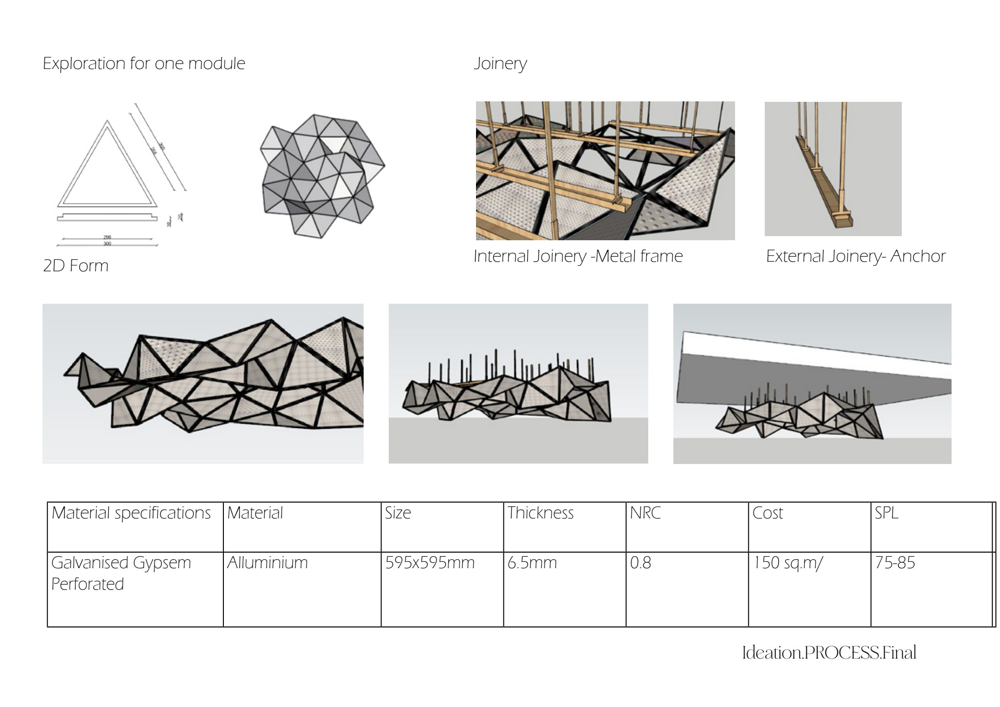
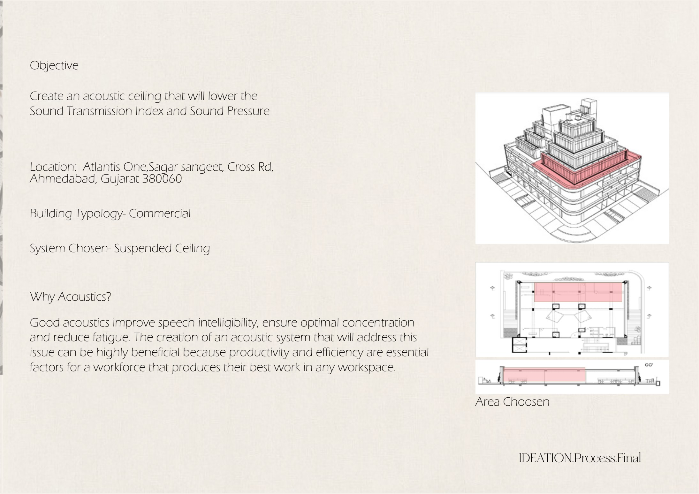

Commercial Design · Acoustic System
Design Efficiency
To design an acoustic system for a corporate environment that improves employees' productivity — an acoustic ceiling that lowers the Sound Transmission Index (STI) and Sound Pressure Level (SPL).
A calmer corporate workspace
Create an acoustic ceiling that reduces sound transmission and pressure across an open commercial floor.
Sound shapes productivity
Good acoustics improve speech intelligibility, ensure optimal concentration and reduce fatigue. This is critical in workspaces where productivity and efficiency are essential to a workforce performing at its best.
A triangular acoustic module
For a single module, internal joinery uses a metal frame while external joinery uses anchors. The 2D form is built from triangular modules forming a patterned acoustic surface.
| Property | Specification |
|---|---|
| Material | Galvanised gypsum perforated panel with aluminium |
| Size | 595 × 595 mm |
| Thickness | 6.5 mm |
| NRC (Noise Reduction Coefficient) | 0.8 |
| SPL target | 75–85 dB |
| Cost | ≈ ₹150 / sq.m |
Tested in Pachyderm
Acoustic performance was analysed in Pachyderm software, alongside a cost-and-area study for a single module.
Module, Render & Analysis


